Gurugram for first-time visitors
Gurugram (formerly Gurgaon) sits about 30 km south-west of central New Delhi, in the state of Haryana. It is part of the National Capital Region (NCR), a metropolitan area of more than 40 million people spanning Delhi and parts of Haryana, Uttar Pradesh and Rajasthan. In three decades it grew from farmland into a corporate hub of global IT, consulting and BPO offices, malls and gated high-rises. Growth followed highways and the metro, so services cluster along a few corridors.
Chrome or Edge on a laptop. Nothing to install.
What you need to know about the place
The data
All of it is already inside the tool. Every vector layer comes in three formats so you can compare them; rasters are Cloud-Optimised GeoTIFFs.
| Name in the tool | What | Source | Download |
|---|---|---|---|
gurugram_cafes | 459 cafés and restaurants, Gurugram | OpenStreetMap via overpass-turbo.eu | GeoJSON · GeoParquet · FlatGeobuf |
ncr_metro_stations | 275 metro stations, Delhi NCR | OpenStreetMap | GeoJSON · GeoParquet · FlatGeobuf |
ncr_districts | 25 NCR districts | geoBoundaries IND ADM2 | GeoJSON · GeoParquet · FlatGeobuf |
mdi_campus | MDI campus outline | OpenStreetMap way 23197218 | GeoJSON · GeoParquet · FlatGeobuf |
mdi_ndvi_20241025 | NDVI raster around MDI, 25 Oct 2024 | Sentinel-2 L2A, Earth Search (AWS) | COG |
Seven labs
Spatial data in seven moves
Recap of the last session on one dataset: load, measure, filter, join, bin, smooth and read a satellite image.
The idea · recap
A spatial record carries geometry (where) and attributes (what). You measure distance over the curved Earth, filter cheaply with a box before the exact test, join points to the polygon they fall in, bin into H3 hexagons, smooth into a heatmap, and summarise satellite pixels inside an outline.
- 1
Load the 459 cafés and restaurants.
Tool: Add data
Do this
- Layers tab → + Add data.
- Choose the file format at the top of the window, then click the dataset card.
Dataset Cafés & restaurants, Gurugram (OpenStreetMap) File format GeoJSON 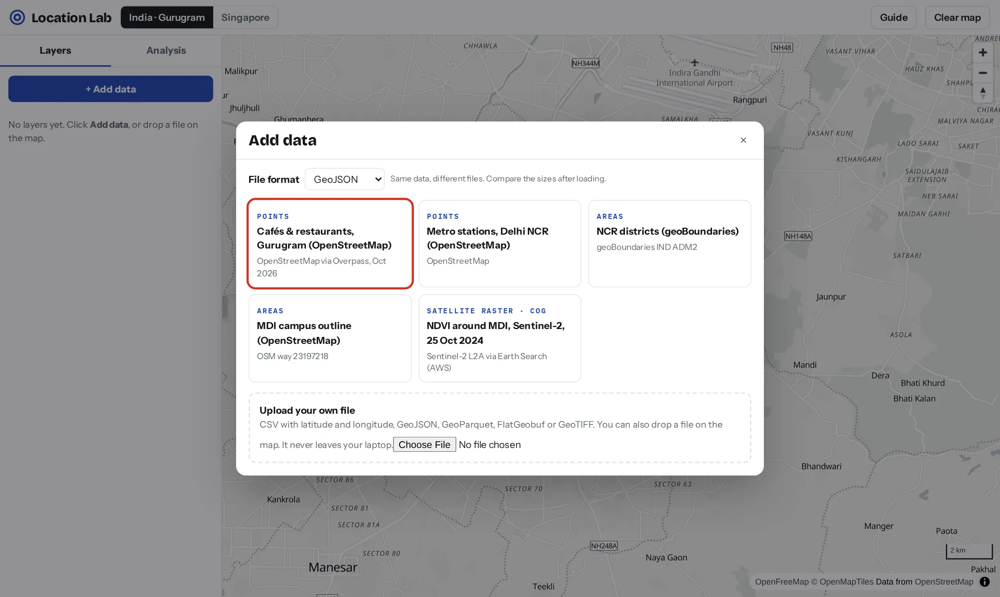
You should see
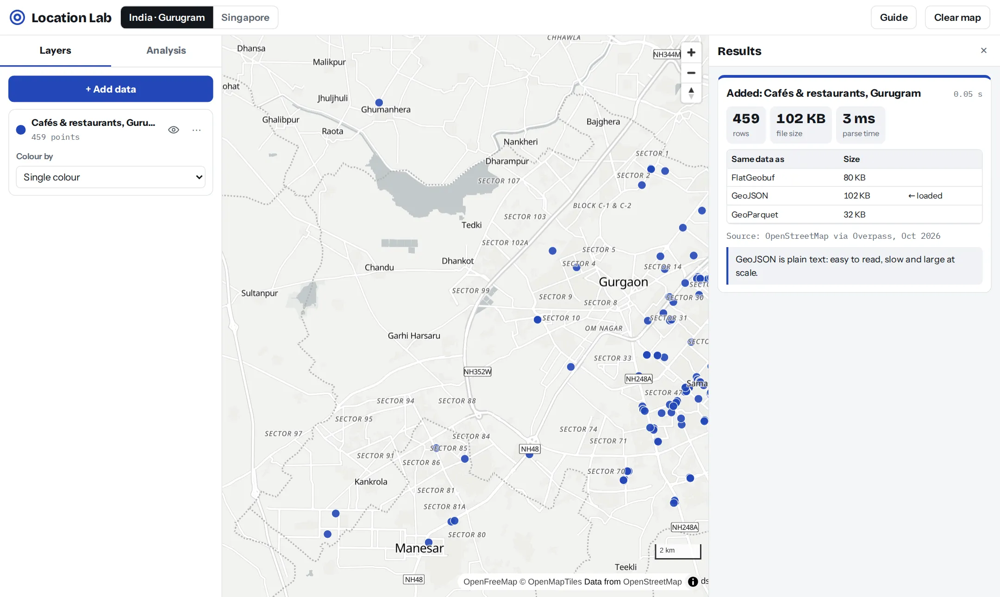
459rows102 KBfile size3 msparse timeSame data as Size FlatGeobuf 80 KB GeoJSON 102 KB ← loaded GeoParquet 32 KB GeoJSON is plain text: easy to read, slow and large at scale.
- 2
Explore the table: fields, blanks, colour by type.
Tool: Explore the table
Do this
- Analysis tab → drag Explore the table onto the map or onto a layer card (or click it).
- Check the settings below, then press Run.
Layer Cafés & restaurants, Gurugram (OpenStreetMap) Colour by type You should see
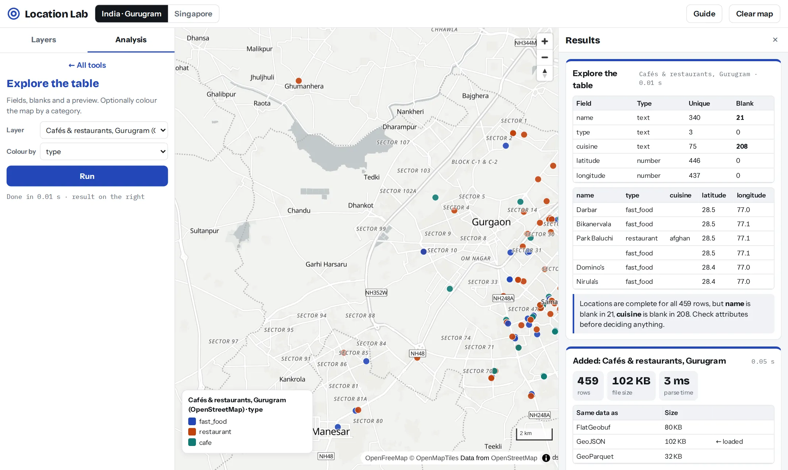
Field Type Unique Blank name text 340 21 type text 3 0 cuisine text 75 208 latitude number 446 0 longitude number 437 0 name type cuisine latitude longitude Locations are complete for all 459 rows, but name is blank in 21, cuisine is blank in 208. Check attributes before deciding anything.
- 3
Nearest places to MDI, with 1, 3 and 5 km rings.
Tool: Nearest to a point
Do this
- Analysis tab → drag Nearest to a point onto the map or onto a layer card (or click it).
- Check the settings below, then press Run.
Layer Cafés & restaurants, Gurugram (OpenStreetMap) From MDI Gurgaon campus centre Show nearest 5 You should see
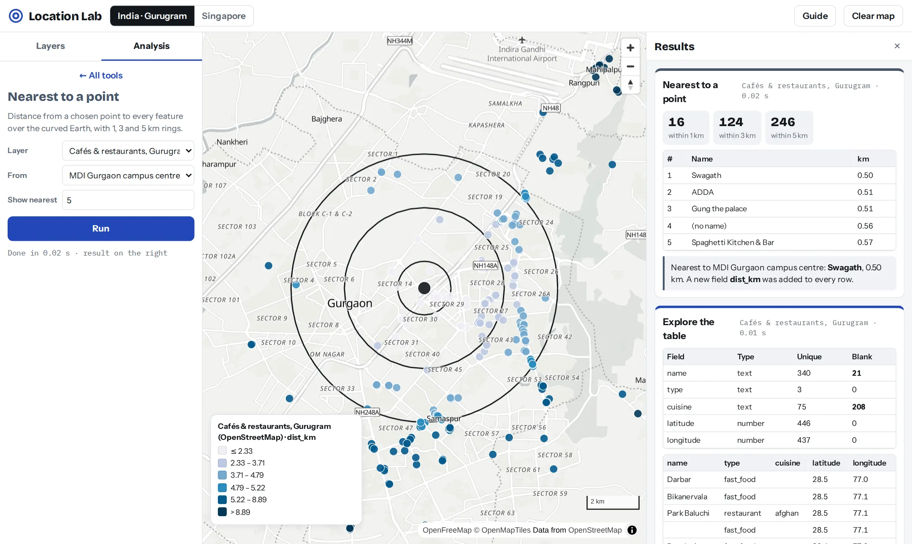
16within 1 km124within 3 km246within 5 km# Name km 1 Swagath 0.50 2 ADDA 0.51 3 Gung the palace 0.51 4 (no name) 0.56 5 Spaghetti Kitchen & Bar 0.57 Nearest to MDI Gurgaon campus centre: Swagath, 0.50 km. A new field dist_km was added to every row.
- 4
Ask the same question in SQL.
Tool: Ask in SQL
Do this
- Analysis tab → drag Ask in SQL onto the map or onto a layer card (or click it).
- Check the settings below, then press Run.
SQL query (query in the box) -- distance in km from MDI Gurgaon campus centre, over the curved Earth (haversine) SELECT name, round(2 * 6371 * asin(sqrt( pow(sin(radians(latitude - 28.47229) / 2), 2) + cos(radians(28.47229)) * cos(radians(latitude)) * pow(sin(radians(longitude - 77.0585) / 2), 2))), 2) AS km, latitude, longitude FROM origin ORDER BY km LIMIT 5;You should see
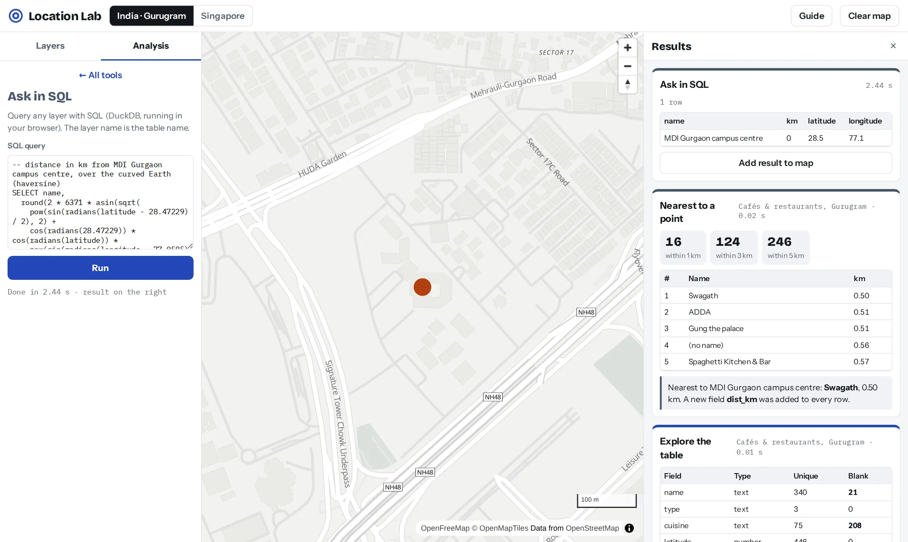
name km latitude longitude MDI Gurgaon campus centre 0 28.5 77.1 - 5
Box filter, then exact 3 km distance (150 → 124).
Tool: Box filter, then distance
Do this
- Analysis tab → drag Box filter, then distance onto the map or onto a layer card (or click it).
- Check the settings below, then press Run.
Layer Cafés & restaurants, Gurugram (OpenStreetMap) Centre MDI Gurgaon campus centre Radius (km) 3 You should see
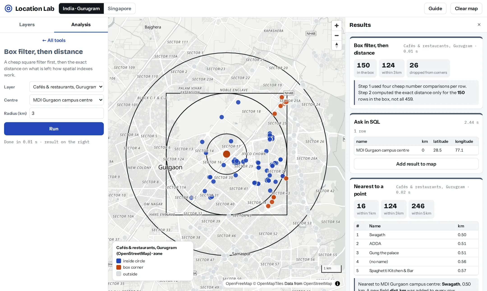
150in the box124within 3 km26dropped from cornersStep 1 used four cheap number comparisons per row. Step 2 computed the exact distance only for the 150 rows in the box, not all 459.
- 6
Load the NCR district outlines.
Tool: Add data
Do this
- Layers tab → + Add data.
- Choose the file format at the top of the window, then click the dataset card.
Dataset NCR districts (geoBoundaries) File format GeoJSON 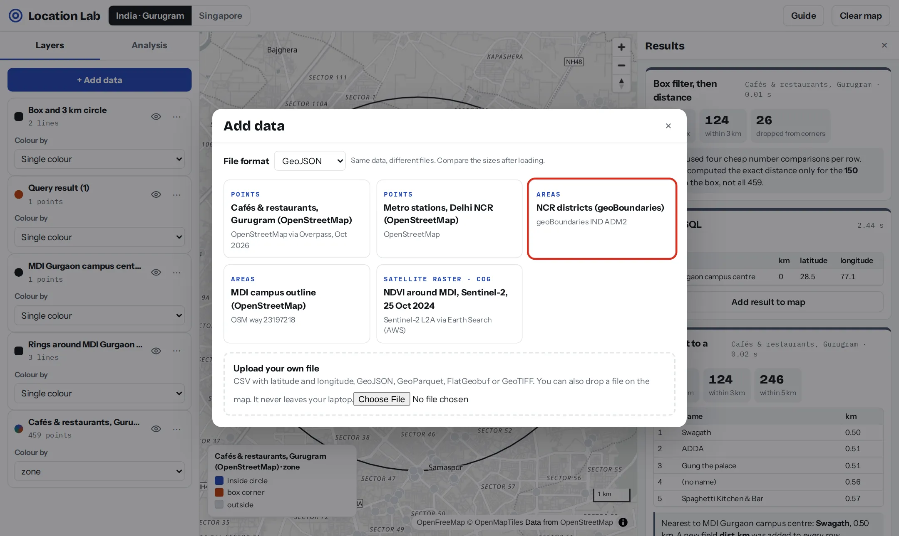
You should see
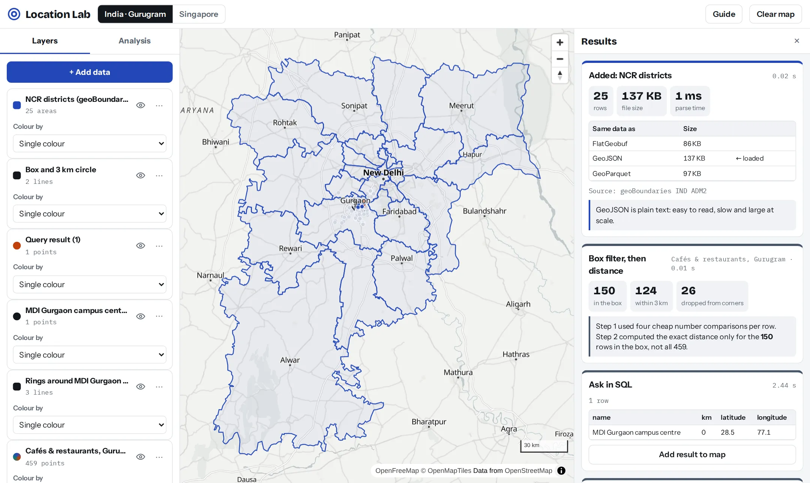
25rows137 KBfile size1 msparse timeSame data as Size FlatGeobuf 86 KB GeoJSON 137 KB ← loaded GeoParquet 97 KB GeoJSON is plain text: easy to read, slow and large at scale.
- 7
Spatial join: which district is each place in?
Tool: Spatial join
Do this
- Analysis tab → drag Spatial join onto the map or onto a layer card (or click it).
- Check the settings below, then press Run.
Points Cafés & restaurants, Gurugram (OpenStreetMap) Polygons NCR districts (geoBoundaries) Polygon name field district You should see
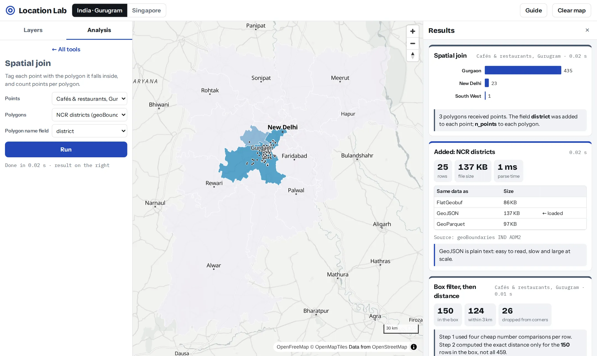
3 polygons received points. The field district was added to each point; n_points to each polygon.
- 8
Bin into H3 hexagons and raise them in 3D.
Tool: H3 hexagon bins
Do this
- Analysis tab → drag H3 hexagon bins onto the map or onto a layer card (or click it).
- Check the settings below, then press Run.
Points Cafés & restaurants, Gurugram (OpenStreetMap) Resolution 8 · ~0.74 km² Also average — none — Empty cells Leave out 3D columns Yes You should see
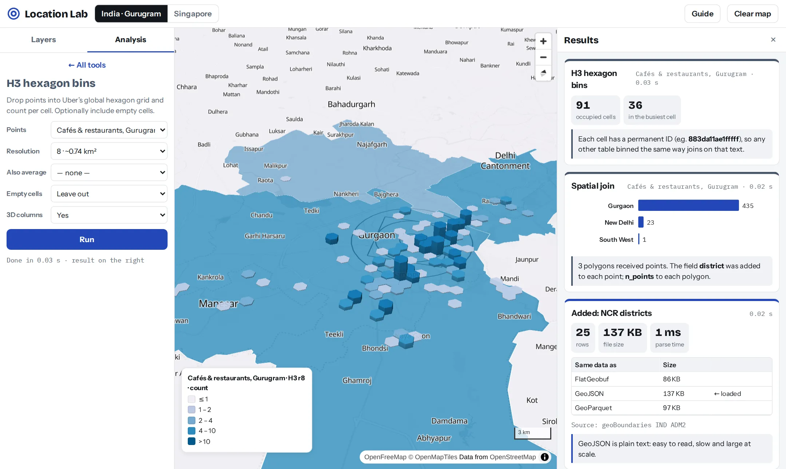
91occupied cells36in the busiest cellEach cell has a permanent ID (e.g. 883da11ae1fffff), so any other table binned the same way joins on that text.
- 9
Smooth the points into a heatmap.
Tool: Heatmap
Do this
- Analysis tab → drag Heatmap onto the map or onto a layer card (or click it).
- Check the settings below, then press Run.
Points Cafés & restaurants, Gurugram (OpenStreetMap) Radius (pixels) 22 You should see
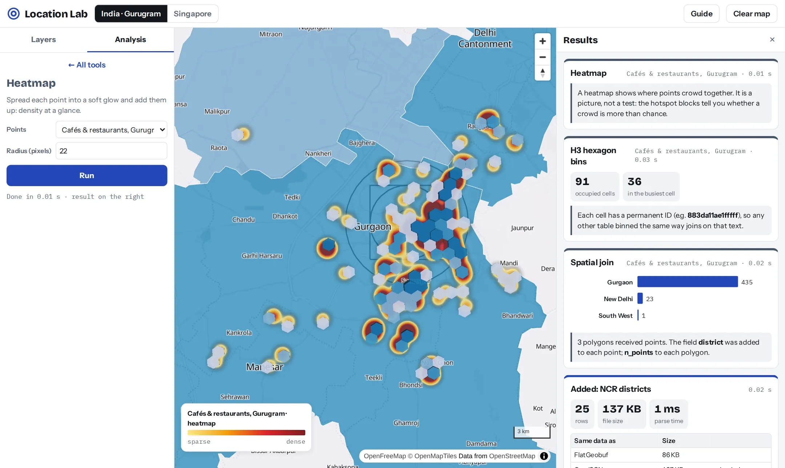
A heatmap shows where points crowd together. It is a picture, not a test: the hotspot blocks tell you whether a crowd is more than chance.
- 10
Load the NDVI satellite raster (COG).
Tool: Add data
Do this
- Layers tab → + Add data.
- Choose the file format at the top of the window, then click the dataset card.
Dataset NDVI around MDI, Sentinel-2, 25 Oct 2024 File format Cloud-Optimised GeoTIFF 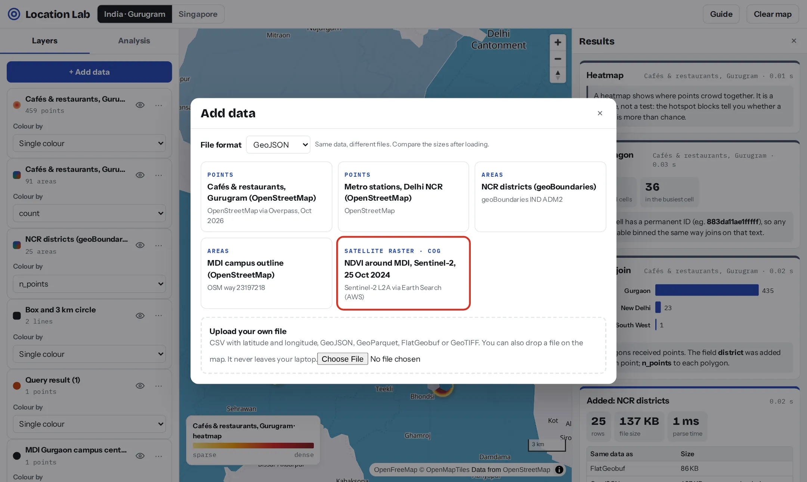
You should see
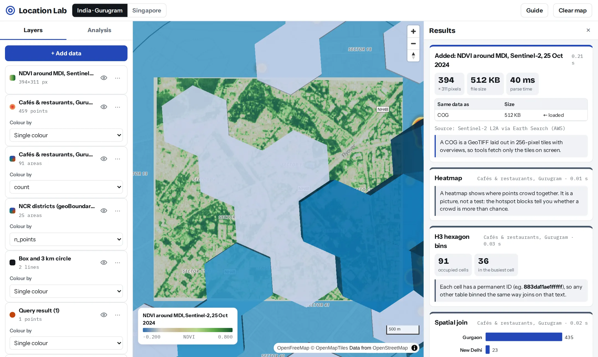
394× 311 pixels512 KBfile size40 msparse timeSame data as Size COG 512 KB ← loaded A COG is a GeoTIFF laid out in 256-pixel tiles with overviews, so tools fetch only the tiles on screen.
- 11
Load the MDI campus outline.
Tool: Add data
Do this
- Layers tab → + Add data.
- Choose the file format at the top of the window, then click the dataset card.
Dataset MDI campus outline (OpenStreetMap) File format GeoJSON 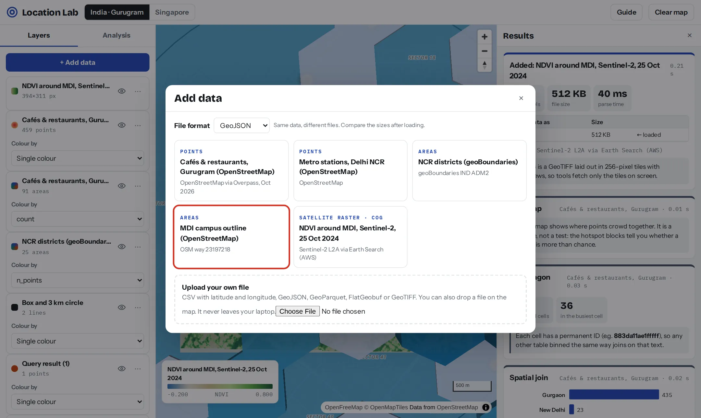
You should see
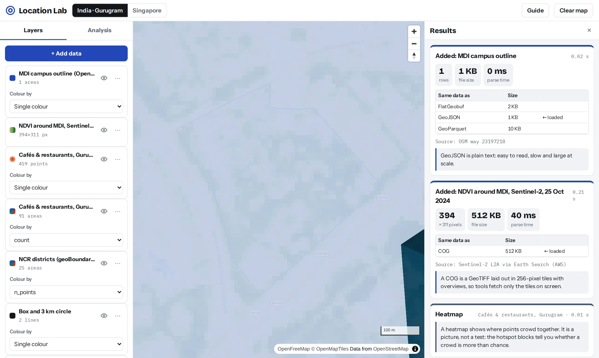
1rows1 KBfile size0 msparse timeSame data as Size FlatGeobuf 2 KB GeoJSON 1 KB ← loaded GeoParquet 10 KB GeoJSON is plain text: easy to read, slow and large at scale.
- 12
Zonal statistics: how green is the campus?
Tool: NDVI zonal statistics
Do this
- Analysis tab → drag NDVI zonal statistics onto the map or onto a layer card (or click it).
- Check the settings below, then press Run.
Raster NDVI around MDI, Sentinel-2, 25 Oct 2024 Outline MDI campus outline (OpenStreetMap) Vegetation above 0.3 You should see
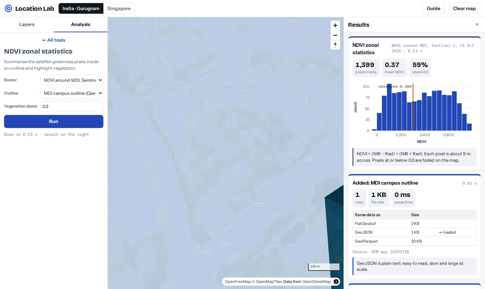
1,399pixels inside0.37mean NDVI59%above 0.3NDVI = (NIR − Red) ÷ (NIR + Red). Each pixel is about 9 m across. Pixels at or below 0.3 are faded on the map.


Neighbours and spatial lag
Before testing any pattern, decide who counts as a neighbour. Everything after this reuses that choice.
The idea · temporal lag
Shift daily sales by one day and lay the copy beside the original: that copy is the lag, yt−1. If today resembles yesterday the two move together: autocorrelation. Time has one direction and one obvious neighbour.
The idea · neighbours
Space has no single “yesterday”, so we must define neighbours. Rook: share an edge (4 in a grid). Queen: share an edge or corner (8). Hexagons: exactly 6. For points, a distance band (everyone within d) or the k nearest.
The idea · weights and spatial lag
Four areas A = 10, B = 2, C = 6, D = 8 in a 2 × 2 grid. Rook neighbours: A–B, A–C, B–D, C–D. Write 1 for neighbours, divide each row by its count (row-standardise): that table is W.
lag(y)ᵢ = Σⱼ wᵢⱼ yⱼ
Lag of A = (2 + 6) ÷ 2 = 4; B = (10 + 8) ÷ 2 = 9; C = 9; D = 4. High A sits in a low neighbourhood: a checkerboard.
- 1
Load the cafés.
Tool: Add data
Do this
- Layers tab → + Add data.
- Choose the file format at the top of the window, then click the dataset card.
Dataset Cafés & restaurants, Gurugram (OpenStreetMap) File format GeoJSON 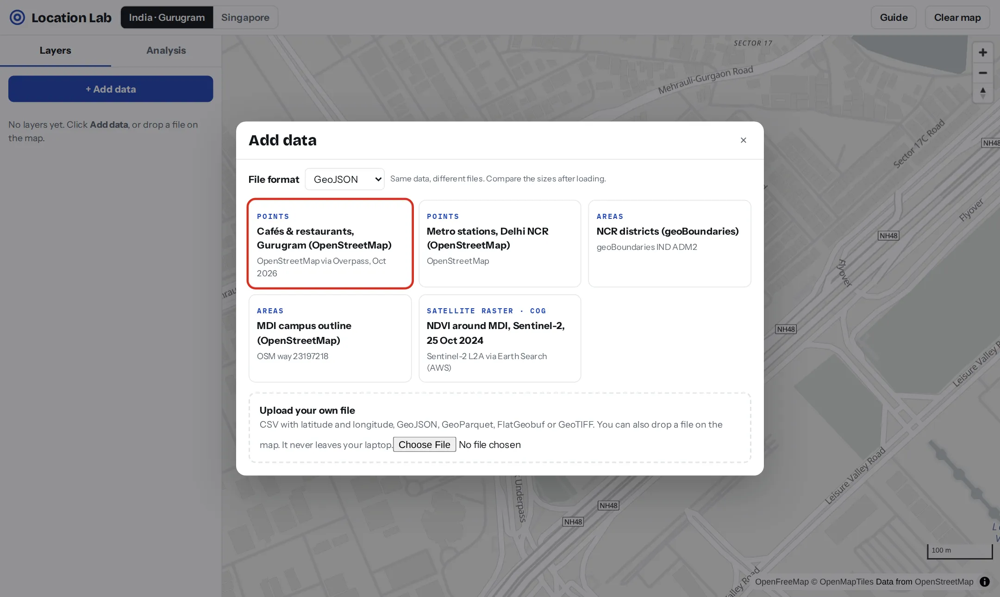
- 2
Count cafés per hexagon, including empty hexagons.
Tool: H3 hexagon bins
Do this
- Analysis tab → drag H3 hexagon bins onto the map or onto a layer card (or click it).
- Check the settings below, then press Run.
Points Cafés & restaurants, Gurugram (OpenStreetMap) Resolution 8 · ~0.74 km² Also average — none — Empty cells Include (needed for statistics) 3D columns No You should see
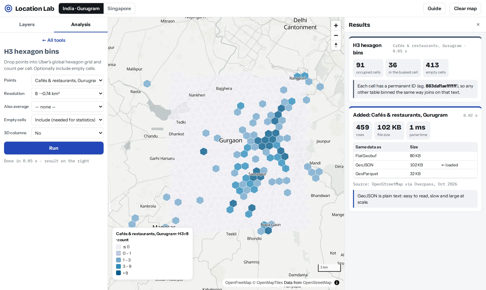
91occupied cells36in the busiest cell413empty cellsEach cell has a permanent ID (e.g. 883da11ae1fffff), so any other table binned the same way joins on that text.
- 3
Build contiguity weights: each hexagon’s 6 touching cells. Click a hexagon to see them.
Tool: Spatial weights
Do this
- Analysis tab → drag Spatial weights onto the map or onto a layer card (or click it).
- Check the settings below, then press Run.
Layer Cafés & restaurants, Gurugram · H3 r8 Neighbours are touching H3 hexagons You should see
5.6neighbours on average0–6range2with none (islands)Neighbours: hexagon contiguity (6 touching cells). Weights are row-standardised, so each feature’s neighbours share a total weight of 1. Click any feature on the map to highlight its neighbours. Islands have no neighbours and are left out of the tests.
- 4
Spatial lag: the average café count of each hexagon’s neighbours.
Tool: Spatial lag
Do this
- Analysis tab → drag Spatial lag onto the map or onto a layer card (or click it).
- Check the settings below, then press Run.
Layer with weights Cafés & restaurants, Gurugram · H3 r8 Value count You should see
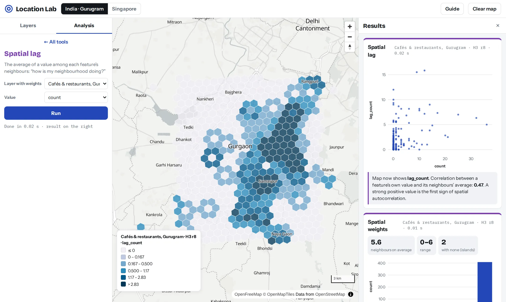
Map now shows lag_count. Correlation between a feature’s own value and its neighbours’ average: 0.47. A strong positive value is the first sign of spatial autocorrelation.


Is the pattern random?
Compare the real cafés with what pure chance would give, at many distances.
The idea · randomness
Complete spatial randomness (CSR) is the benchmark: points ignore each other and every spot is equally likely. Clustered points attract (dining strips); dispersed points repel (franchise territories, planned services).
Clustered R < 1
Random R ≈ 1
Dispersed R > 1
The idea · R and Ripley’s L
R = mean nearest distance ÷ 0.5/√(n/A)
R < 1 clustered, R > 1 dispersed. Ripley’s L repeats the test with circles of growing radius; the grey band from 19 random patterns shows what chance gives.
Gurugram cafés: 144 m vs 487 m, R = 0.30.
- 1
Load the cafés.
Tool: Add data
Do this
- Layers tab → + Add data.
- Choose the file format at the top of the window, then click the dataset card.
Dataset Cafés & restaurants, Gurugram (OpenStreetMap) File format GeoJSON 
You should see
 459rows102 KBfile size1 msparse time
459rows102 KBfile size1 msparse timeSame data as Size FlatGeobuf 80 KB GeoJSON 102 KB ← loaded GeoParquet 32 KB GeoJSON is plain text: easy to read, slow and large at scale.
- 2
Nearest-neighbour ratio and Ripley’s L against 19 random patterns.
Tool: Point pattern test
Do this
- Analysis tab → drag Point pattern test onto the map or onto a layer card (or click it).
- Check the settings below, then press Run.
Points Cafés & restaurants, Gurugram (OpenStreetMap) You should see
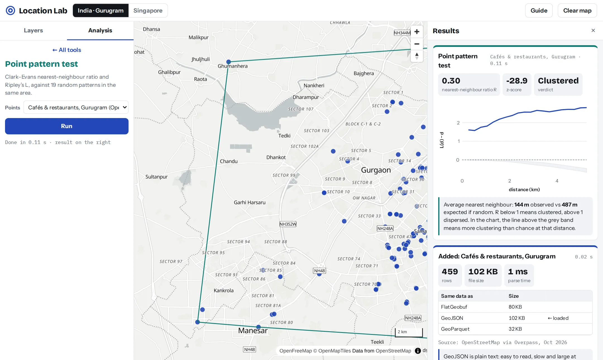
0.30nearest-neighbour ratio R-28.9z-scoreClusteredverdictAverage nearest neighbour: 144 m observed vs 487 m expected if random. R below 1 means clustered, above 1 dispersed. In the chart, the line above the grey band means more clustering than chance at that distance.

Autocorrelation and hotspots
Do busy hexagons sit next to busy hexagons? Where exactly are the significant hotspots?
The idea · Moran’s I
Correlate a map with its own spatial lag. With z = y − ȳ:
I = Σ zᵢ(Wz)ᵢ ÷ Σ zᵢ²
It is the slope of z against its lag. 2 × 2 example: z = (3.5, −4.5, −0.5, 1.5), Wz = (−2.5, 2.5, 2.5, −2.5), so I = −25 ÷ 35 = −0.71, a checkerboard. Shuffle values 999 times; if the real I beats all, p = 0.001.
The idea · LISA and Gi*
LISA keeps each place’s own term zᵢ(Wz)ᵢ and labels it High-High (hotspot), Low-Low, High-Low or Low-High. Gi* compares the total in a window around each place with chance and returns a z-score (1.96 = 95%).
- 1
Load the cafés.
Tool: Add data
Do this
- Layers tab → + Add data.
- Choose the file format at the top of the window, then click the dataset card.
Dataset Cafés & restaurants, Gurugram (OpenStreetMap) File format GeoJSON 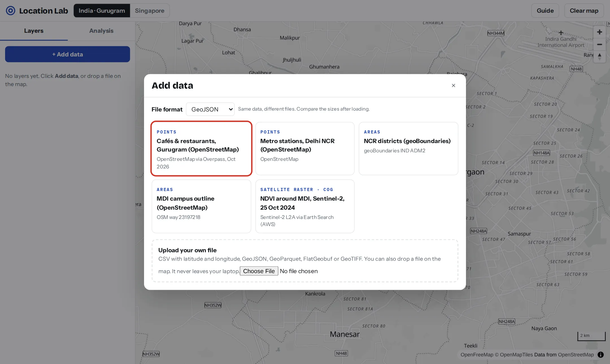
You should see
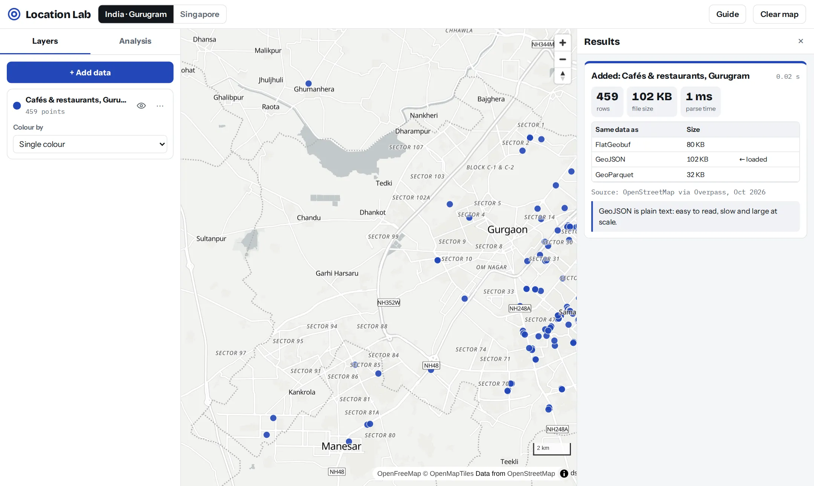
459rows102 KBfile size1 msparse timeSame data as Size FlatGeobuf 80 KB GeoJSON 102 KB ← loaded GeoParquet 32 KB GeoJSON is plain text: easy to read, slow and large at scale.
- 2
Count per hexagon, empty cells included.
Tool: H3 hexagon bins
Do this
- Analysis tab → drag H3 hexagon bins onto the map or onto a layer card (or click it).
- Check the settings below, then press Run.
Points Cafés & restaurants, Gurugram (OpenStreetMap) Resolution 8 · ~0.74 km² Also average — none — Empty cells Include (needed for statistics) 3D columns No - 3
Contiguity weights.
Tool: Spatial weights
Do this
- Analysis tab → drag Spatial weights onto the map or onto a layer card (or click it).
- Check the settings below, then press Run.
Layer Cafés & restaurants, Gurugram · H3 r8 Neighbours are touching H3 hexagons You should see
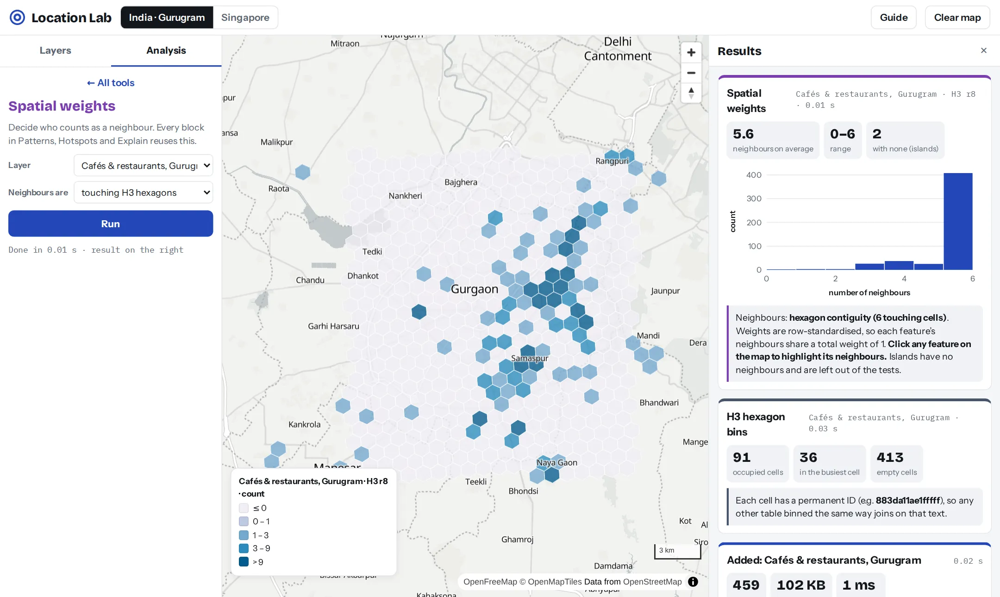
5.6neighbours on average0–6range2with none (islands)Neighbours: hexagon contiguity (6 touching cells). Weights are row-standardised, so each feature’s neighbours share a total weight of 1. Click any feature on the map to highlight its neighbours. Islands have no neighbours and are left out of the tests.
- 4
Global Moran’s I with 999 random shuffles.
Tool: Global Moran’s I
Do this
- Analysis tab → drag Global Moran’s I onto the map or onto a layer card (or click it).
- Check the settings below, then press Run.
Layer with weights Cafés & restaurants, Gurugram · H3 r8 Value count Shuffles 999 You should see
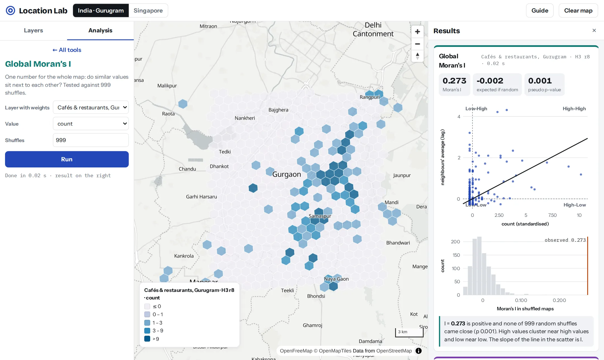
0.273Moran’s I-0.002expected if random0.001pseudo p-valueI = 0.273 is positive and none of 999 random shuffles came close (p 0.001). High values cluster near high values and low near low. The slope of the line in the scatter is I.
- 5
Local Moran (LISA): hotspots, coldspots and outliers.
Tool: Local Moran (LISA)
Do this
- Analysis tab → drag Local Moran (LISA) onto the map or onto a layer card (or click it).
- Check the settings below, then press Run.
Layer with weights Cafés & restaurants, Gurugram · H3 r8 Value count Significance 95% You should see
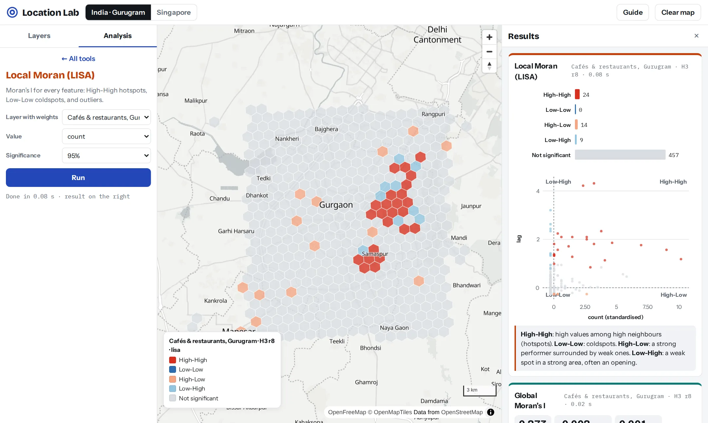
High-High: high values among high neighbours (hotspots). Low-Low: coldspots. High-Low: a strong performer surrounded by weak ones. Low-High: a weak spot in a strong area, often an opening.
- 6
Getis-Ord Gi*: hotspots at 90/95/99% confidence.
Tool: Hotspots (Getis-Ord Gi*)
Do this
- Analysis tab → drag Hotspots (Getis-Ord Gi*) onto the map or onto a layer card (or click it).
- Check the settings below, then press Run.
Layer with weights Cafés & restaurants, Gurugram · H3 r8 Value count You should see
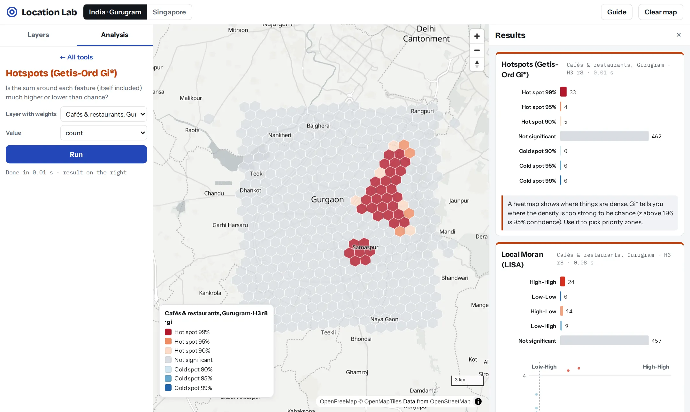
A heatmap shows where things are dense. Gi* tells you where the density is too strong to be chance (z above 1.96 is 95% confidence). Use it to pick priority zones.


Clusters for territories
Group nearby outlets into market clusters and flag isolated ones.
The idea · DBSCAN
Two business numbers: ε (how close is “the same place”) and minPts (how many make a market). A point with minPts others within ε is a core; points near a core are border; the rest are noise. Clusters take any shape and their number comes from the data.
- 1
Load the cafés.
Tool: Add data
Do this
- Layers tab → + Add data.
- Choose the file format at the top of the window, then click the dataset card.
Dataset Cafés & restaurants, Gurugram (OpenStreetMap) File format GeoJSON 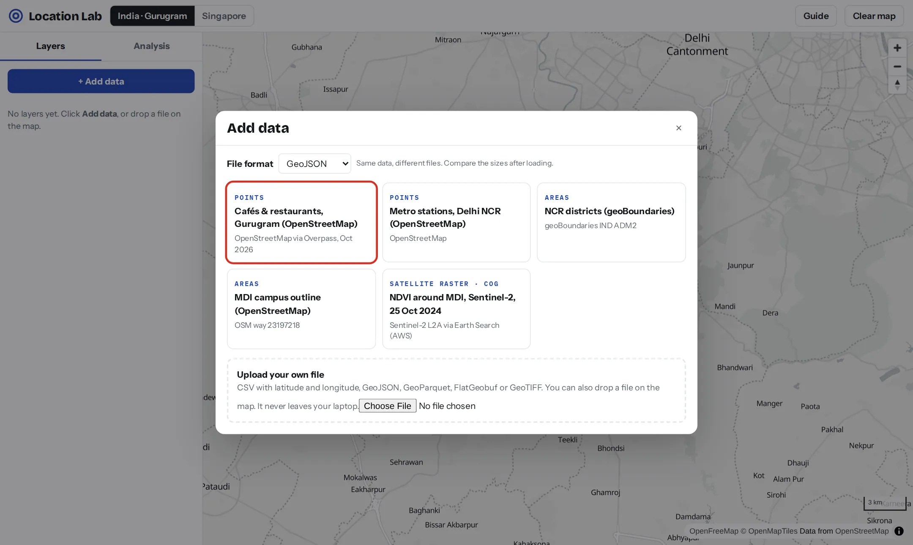
You should see
 459rows102 KBfile size1 msparse time
459rows102 KBfile size1 msparse timeSame data as Size FlatGeobuf 80 KB GeoJSON 102 KB ← loaded GeoParquet 32 KB GeoJSON is plain text: easy to read, slow and large at scale.
- 2
DBSCAN: clusters of at least 6 places within 400 m.
Tool: Density clusters (DBSCAN)
Do this
- Analysis tab → drag Density clusters (DBSCAN) onto the map or onto a layer card (or click it).
- Check the settings below, then press Run.
Points Cafés & restaurants, Gurugram (OpenStreetMap) Within (km) 0.4 At least 6 You should see
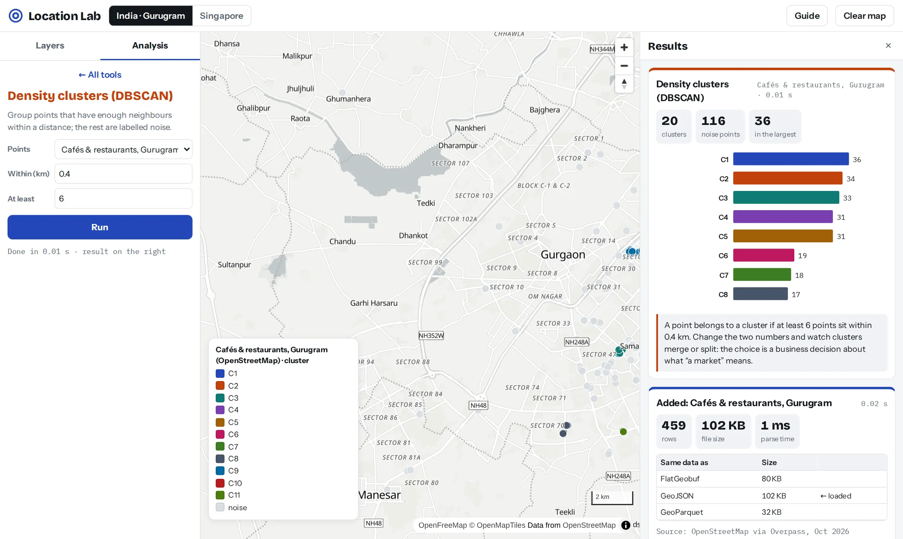
20clusters116noise points36in the largestA point belongs to a cluster if at least 6 points sit within 0.4 km. Change the two numbers and watch clusters merge or split: the choice is a business decision about what “a market” means.


From samples to surfaces
Estimate a value everywhere from a few samples, then check against the truth.
The idea · IDW
Weight each sample by 1 ÷ distancep. Samples 12, 10, 10 at 350, 750, 850 m give 11.1 with p = 1 and 11.4 with p = 2: higher power trusts the nearest sample more.
The idea · variogram and kriging
Plot half the squared difference of every pair against distance. Nugget: noise at zero distance. Sill: the plateau. Range: where similarity fades out (0.54 km for Gurugram NDVI). Kriging uses this curve to weight samples and returns a standard error for every cell.
- 1
Load the NDVI raster: this is the truth.
Tool: Add data
Do this
- Layers tab → + Add data.
- Choose the file format at the top of the window, then click the dataset card.
Dataset NDVI around MDI, Sentinel-2, 25 Oct 2024 File format Cloud-Optimised GeoTIFF 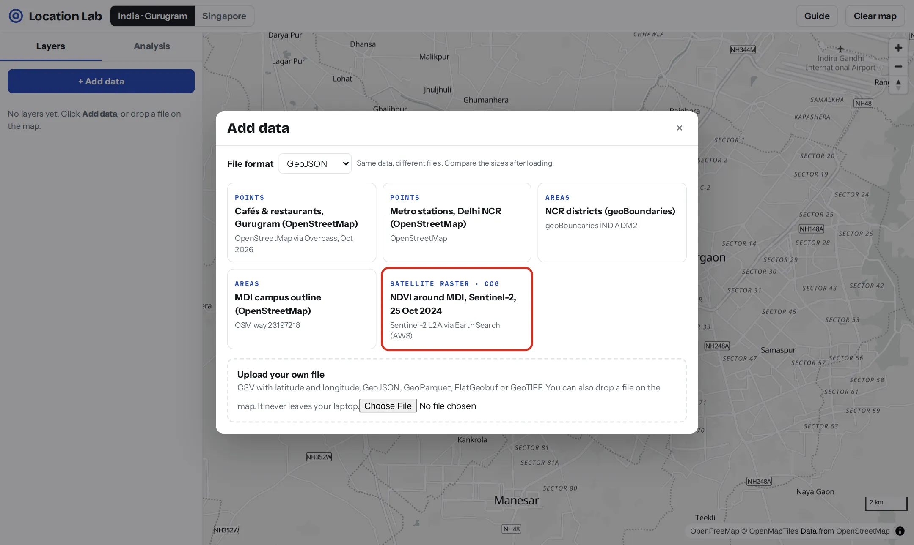
You should see
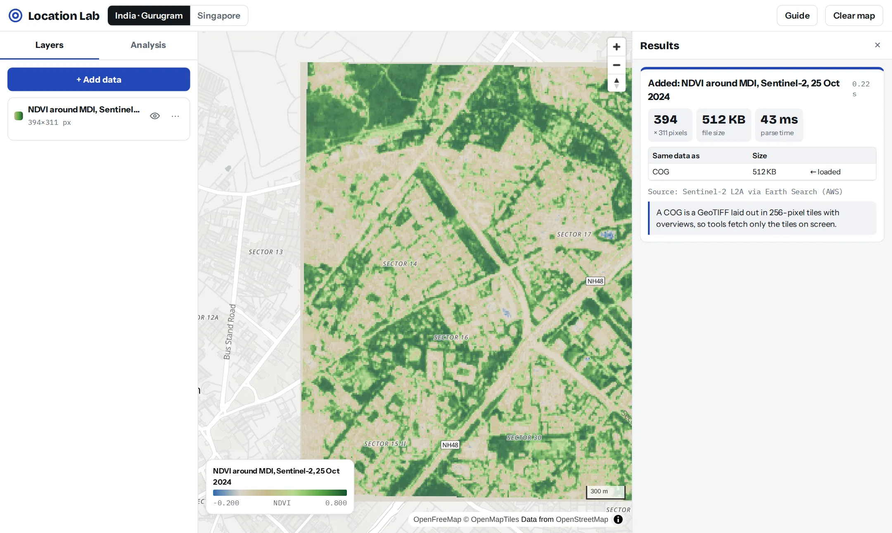
394× 311 pixels512 KBfile size43 msparse timeSame data as Size COG 512 KB ← loaded A COG is a GeoTIFF laid out in 256-pixel tiles with overviews, so tools fetch only the tiles on screen.
- 2
Keep only 300 random sample points.
Tool: Sample a raster
Do this
- Analysis tab → drag Sample a raster onto the map or onto a layer card (or click it).
- Check the settings below, then press Run.
Raster NDVI around MDI, Sentinel-2, 25 Oct 2024 Samples 300 You should see
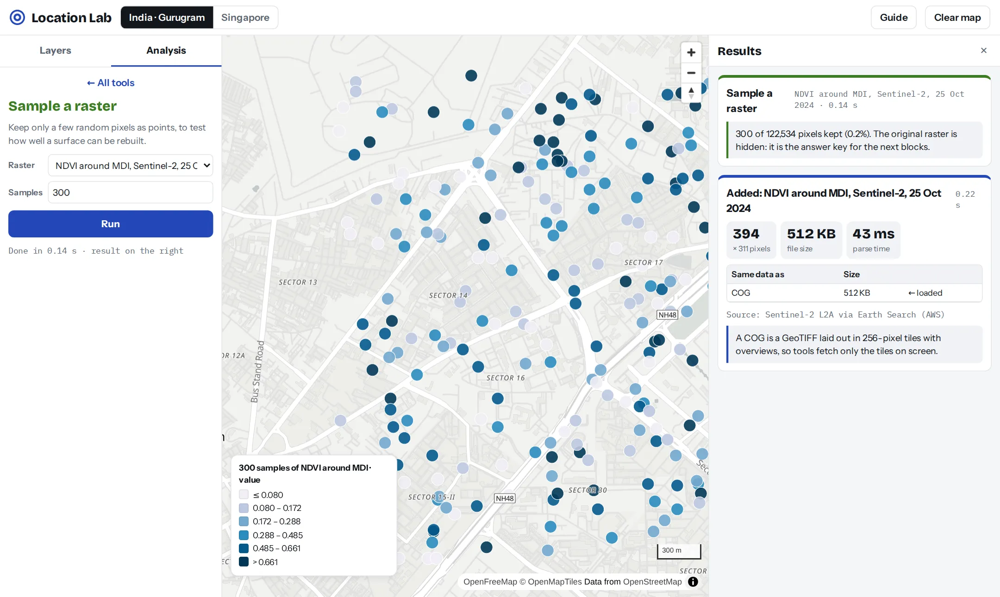
300 of 122,534 pixels kept (0.2%). The original raster is hidden: it is the answer key for the next blocks.
- 3
IDW: rebuild the surface from the 300 samples.
Tool: IDW surface
Do this
- Analysis tab → drag IDW surface onto the map or onto a layer card (or click it).
- Check the settings below, then press Run.
Sample points 300 samples of NDVI around MDI Value value Power 2 Cell size (m) 30 You should see
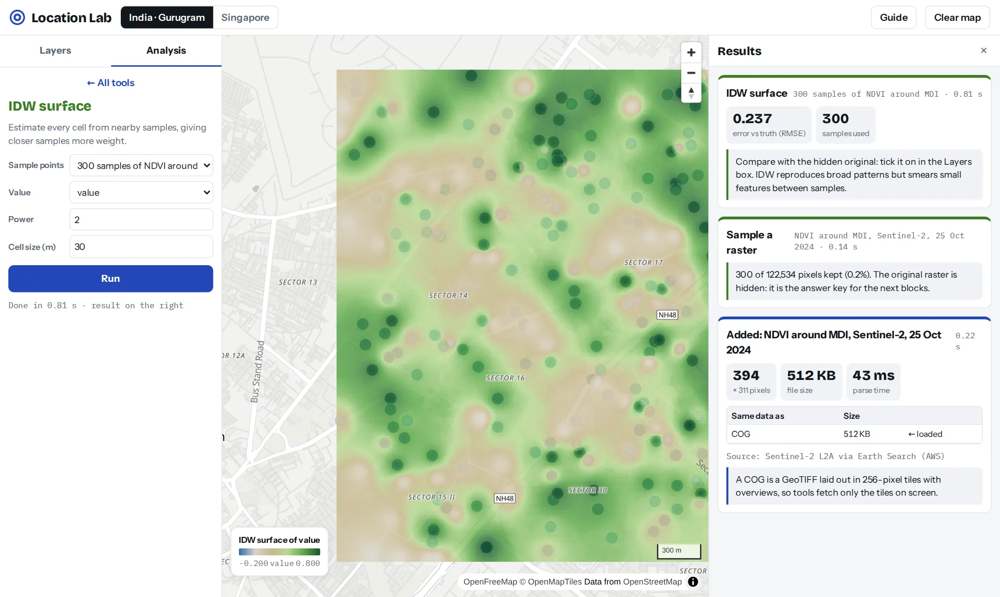
0.237error vs truth (RMSE)300samples usedCompare with the hidden original: tick it on in the Layers box. IDW reproduces broad patterns but smears small features between samples.
- 4
Kriging: a surface plus its uncertainty.
Tool: Kriging surface
Do this
- Analysis tab → drag Kriging surface onto the map or onto a layer card (or click it).
- Check the settings below, then press Run.
Sample points 300 samples of NDVI around MDI Value value Cell size (m) 30 You should see
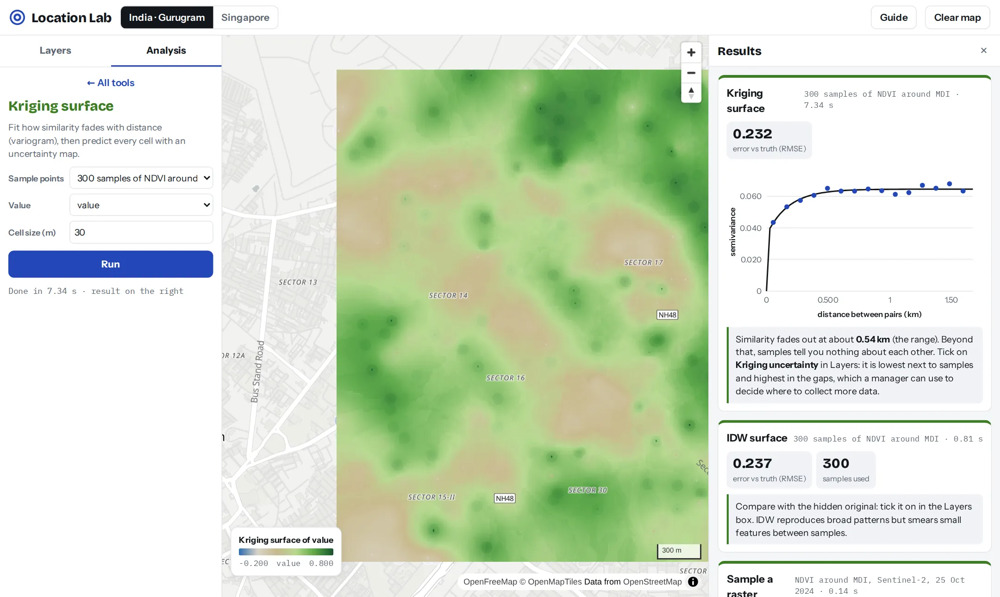
0.232error vs truth (RMSE)Similarity fades out at about 0.54 km (the range). Beyond that, samples tell you nothing about each other. Tick on Kriging uncertainty in Layers: it is lowest next to samples and highest in the gaps, which a manager can use to decide where to collect more data.


What explains café density?
Regress café counts on access, then check whether space is still hiding in the errors.
The idea · OLS and its residuals
OLS gives one coefficient per variable and assumes independent errors. Map the residuals and test them with Moran’s I. Gurugram: R² 0.04, residuals still spatial.
The idea · lag, error and GWR
Lag: y = ρWy + Xβ + ε
Error: y = Xβ + u, u = λWu + ε
ρ is spillover; λ is shared unmeasured factors. Compare AIC (lower wins). GWR fits a local regression at every point with a kernel that fades to zero at the bandwidth, chosen by AICc. R² rises from 0.04 to 0.45.
- 1
Load the cafés.
Tool: Add data
Do this
- Layers tab → + Add data.
- Choose the file format at the top of the window, then click the dataset card.
Dataset Cafés & restaurants, Gurugram (OpenStreetMap) File format GeoJSON 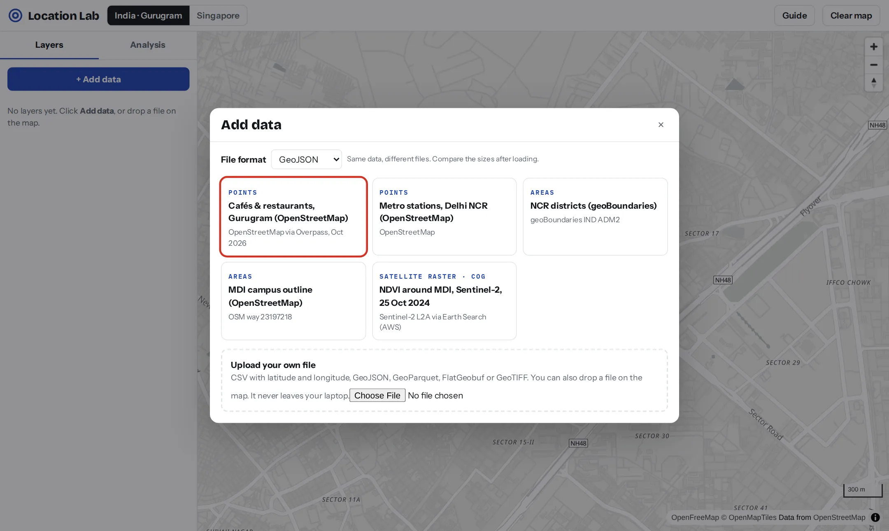
- 2
Count per hexagon.
Tool: H3 hexagon bins
Do this
- Analysis tab → drag H3 hexagon bins onto the map or onto a layer card (or click it).
- Check the settings below, then press Run.
Points Cafés & restaurants, Gurugram (OpenStreetMap) Resolution 8 · ~0.74 km² Also average — none — Empty cells Include (needed for statistics) 3D columns No - 3
Load the metro stations.
Tool: Add data
Do this
- Layers tab → + Add data.
- Choose the file format at the top of the window, then click the dataset card.
Dataset Metro stations, Delhi NCR (OpenStreetMap) File format GeoJSON 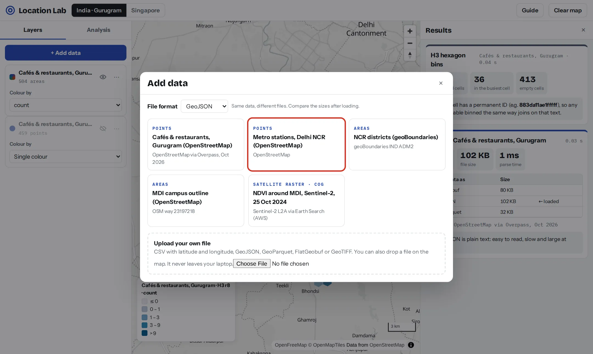
You should see
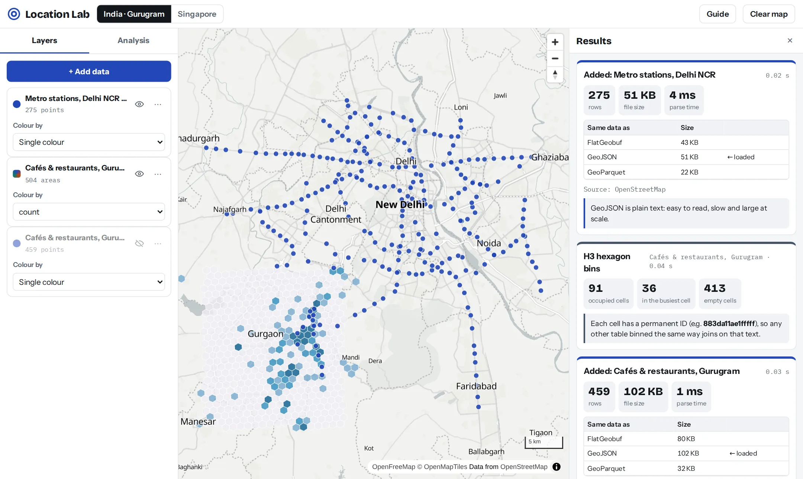
275rows51 KBfile size4 msparse timeSame data as Size FlatGeobuf 43 KB GeoJSON 51 KB ← loaded GeoParquet 22 KB GeoJSON is plain text: easy to read, slow and large at scale.
- 4
Distance from each hexagon to its nearest metro station.
Tool: Distance to nearest
Do this
- Analysis tab → drag Distance to nearest onto the map or onto a layer card (or click it).
- Check the settings below, then press Run.
Add field to Cafés & restaurants, Gurugram · H3 r8 Distance to nearest feature of a layer Layer Metro stations, Delhi NCR (OpenStreetMap) Field name metro You should see
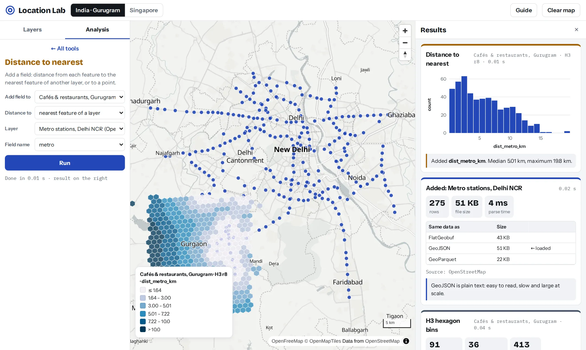
Added dist_metro_km. Median 5.01 km, maximum 19.8 km.
- 5
Distance to Cyber Hub, the business district.
Tool: Distance to nearest
Do this
- Analysis tab → drag Distance to nearest onto the map or onto a layer card (or click it).
- Check the settings below, then press Run.
Add field to Cafés & restaurants, Gurugram · H3 r8 Distance to a fixed point Point Cyber Hub (business district) Field name cyberhub You should see
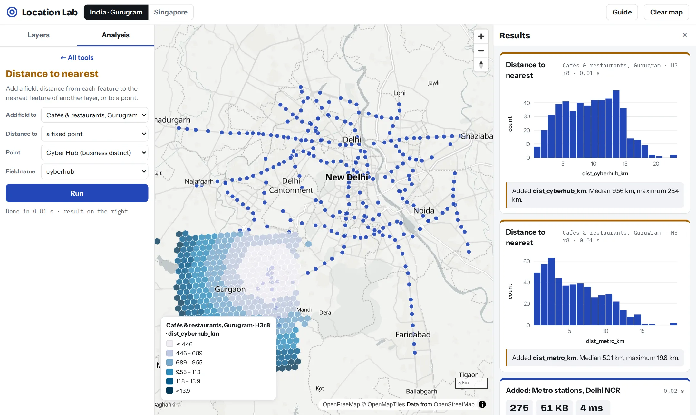
Added dist_cyberhub_km. Median 9.56 km, maximum 23.4 km.
- 6
Contiguity weights.
Tool: Spatial weights
Do this
- Analysis tab → drag Spatial weights onto the map or onto a layer card (or click it).
- Check the settings below, then press Run.
Layer Cafés & restaurants, Gurugram · H3 r8 Neighbours are touching H3 hexagons You should see
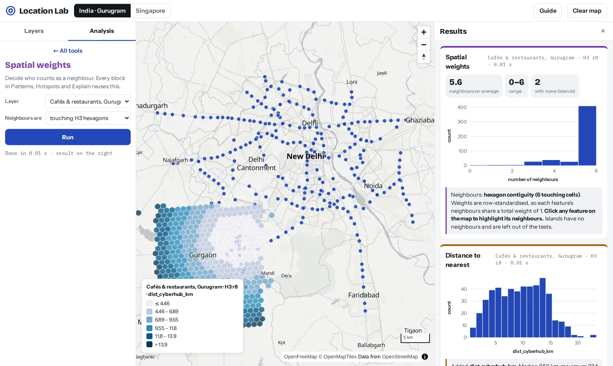
5.6neighbours on average0–6range2with none (islands)Neighbours: hexagon contiguity (6 touching cells). Weights are row-standardised, so each feature’s neighbours share a total weight of 1. Click any feature on the map to highlight its neighbours. Islands have no neighbours and are left out of the tests.
- 7
Ordinary regression, then Moran’s I on its residuals.
Tool: Ordinary regression (OLS)
Do this
- Analysis tab → drag Ordinary regression (OLS) onto the map or onto a layer card (or click it).
- Check the settings below, then press Run.
Layer Cafés & restaurants, Gurugram · H3 r8 Explain (y) count Using (x) dist_metro_km, dist_cyberhub_km You should see
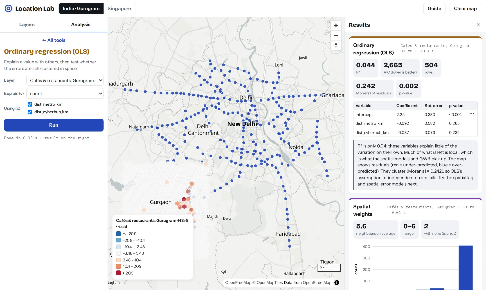
0.044R²2,665AIC (lower is better)504rows0.242Moran’s I of residuals0.002p-valueVariable Coefficient Std. error p-value Intercept 2.25 0.380 <0.001 *** dist_metro_km -0.092 0.082 0.265 dist_cyberhub_km -0.087 0.073 0.232 R² is only 0.04: these variables explain little of the variation on their own. Much of what is left is local, which is what the spatial models and GWR pick up. The map shows residuals (red = under-predicted, blue = over-predicted). They cluster (Moran’s I = 0.242), so OLS’s assumption of independent errors fails. Try the spatial lag and spatial error models next.
- 8
Spatial lag model (spillover).
Tool: Spatial lag model
Do this
- Analysis tab → drag Spatial lag model onto the map or onto a layer card (or click it).
- Check the settings below, then press Run.
Layer with weights Cafés & restaurants, Gurugram · H3 r8 Explain (y) count Using (x) dist_metro_km, dist_cyberhub_km You should see
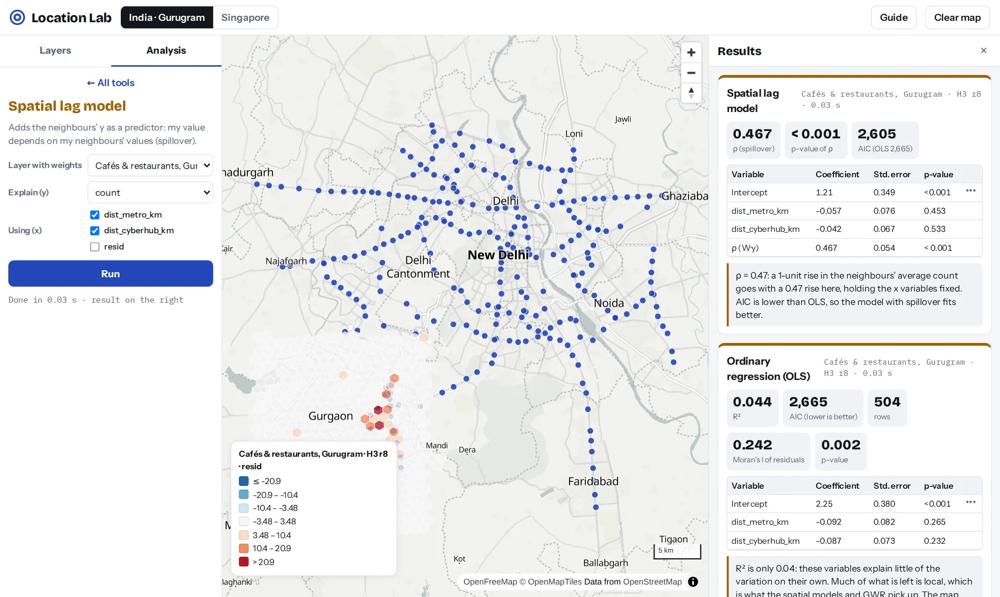
0.467ρ (spillover)< 0.001p-value of ρ2,605AIC (OLS 2,665)Variable Coefficient Std. error p-value Intercept 1.21 0.349 <0.001 *** dist_metro_km -0.057 0.076 0.453 dist_cyberhub_km -0.042 0.067 0.533 ρ (W·y) 0.467 0.054 < 0.001 ρ = 0.47: a 1-unit rise in the neighbours’ average count goes with a 0.47 rise here, holding the x variables fixed. AIC is lower than OLS, so the model with spillover fits better.
- 9
Spatial error model (clustered missing factors).
Tool: Spatial error model
Do this
- Analysis tab → drag Spatial error model onto the map or onto a layer card (or click it).
- Check the settings below, then press Run.
Layer with weights Cafés & restaurants, Gurugram · H3 r8 Explain (y) count Using (x) dist_metro_km, dist_cyberhub_km You should see
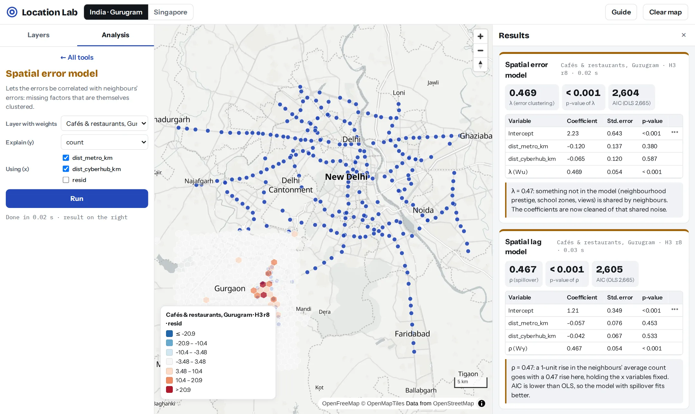
0.469λ (error clustering)< 0.001p-value of λ2,604AIC (OLS 2,665)Variable Coefficient Std. error p-value Intercept 2.23 0.643 <0.001 *** dist_metro_km -0.120 0.137 0.380 dist_cyberhub_km -0.065 0.120 0.587 λ (W·u) 0.469 0.054 < 0.001 λ = 0.47: something not in the model (neighbourhood prestige, school zones, views) is shared by neighbours. The coefficients are now cleaned of that shared noise.
- 10
GWR: does the metro effect change across the city?
Tool: Geographically weighted regression
Do this
- Analysis tab → drag Geographically weighted regression onto the map or onto a layer card (or click it).
- Check the settings below, then press Run.
Layer Cafés & restaurants, Gurugram · H3 r8 Explain (y) count Using (x) dist_metro_km, dist_cyberhub_km Neighbours per fit (0 = auto) 0 Max rows (speed) 2000 You should see
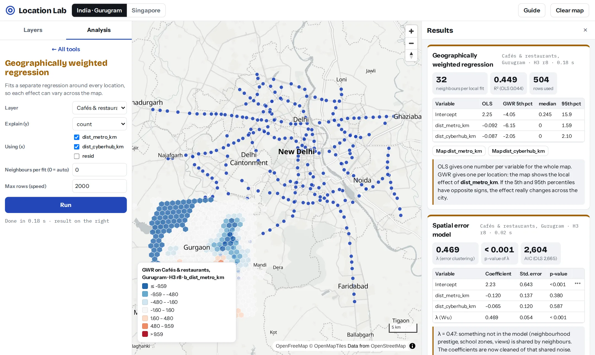
32neighbours per local fit0.449R² (OLS 0.044)504rows usedVariable OLS GWR 5th pct median 95th pct Intercept 2.25 -4.05 0.245 15.9 dist_metro_km -0.092 -6.15 0 1.59 dist_cyberhub_km -0.087 -2.05 0 2.10 OLS gives one number per variable for the whole map. GWR gives one per location: the map shows the local effect of dist_metro_km. If the 5th and 95th percentiles have opposite signs, the effect really changes across the city.


Final product: a one-page decision brief
Question. A café chain wants its next three Gurugram outlets.
Evidence. Cafés are strongly clustered (R = 0.30) and café density is spatially autocorrelated (Moran’s I = 0.273). LISA finds 24 High-High hexagons and DBSCAN finds 20 dining clusters. Distance to metro and Cyber Hub alone explains little (R² 0.04), but GWR lifts fit to 0.45: access matters differently by area.
Decision. Shortlist Low-High hexagons (a weak spot inside a strong area) next to existing clusters, inside zones where GWR shows a strong metro effect. Validate footfall on site before signing.
Your deliverable: one page with the question, three maps or charts from the tool (layer card → download, or a screenshot), the numbers that matter, and a decision with its main risk.